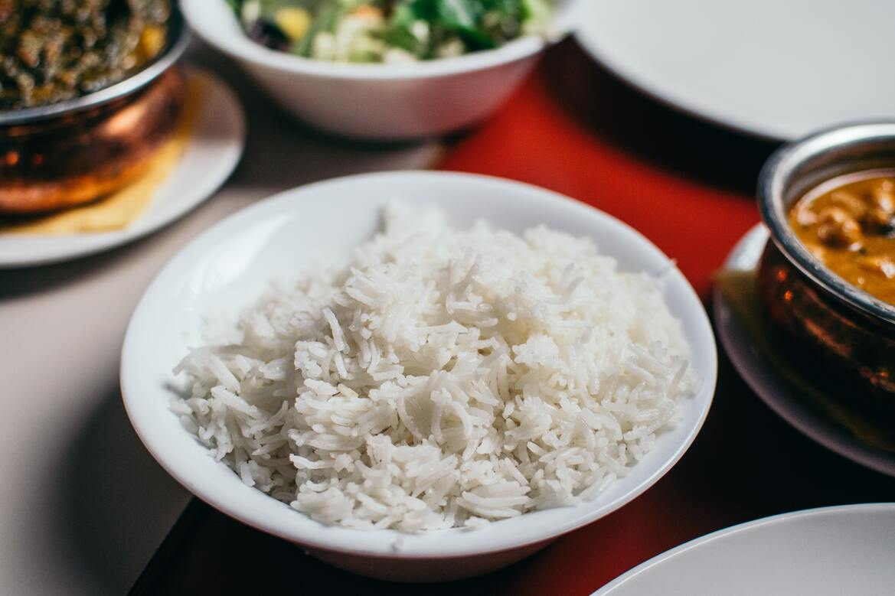

White rice

Description
White rice is deeply rooted in Brazilian cuisine, as it's presence in everyday's lunch is almost predictable. Whether it's a Sunday's barbecue with friends or a simple lunch within family, white rice is a must. It's usually eaten together with beans and accompanied by salad and protein, like red meat or chicken.
Ingredients
- 1 tablespoon of olive oil
- 1 clove of garlic, minced
- 50 g of white rice
- 150 mL of water
- 1 teaspoon of salt
Steps
- Saute the garlic in olive oil.
- Add the rice and let it fry for about 30 seconds.
- Add the water and the salt.
- Lower the heat and let it cook until the water is almost dry.
- Cover the pan and wait about 20 minutes before serving.